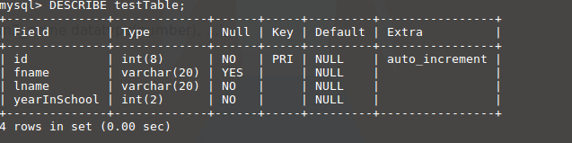
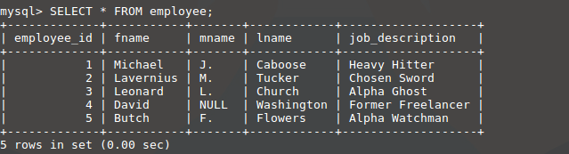

What does Full in Full Stack mean?
{kind=link}
A Full Stack developer is comfortable with both front-end and back-end technologies.
The front-end of a web site is always what the user sees and interacts with.
The back-end, however, is what is on the server that delivers the content to the front-end.
What does Stack in Full Stack mean?
{kind=link}
Earlier we said that a Full Stack Developer is a person who is comfortable with both front-end and back-end technologies.
Well, the term Stack refers to all of the programs used to develop both front-end and back-end.
For front-end, you use HTML, CSS, JavaScript, and more.
The back-end uses programs like PHP, MySQL, and more.
The server also uses a thing like a LAMP Stack.
What is a Lamp Stack?
{kind=link}
A LAMP stack is a system of programs designed to streamline a server.
L refers to Linux, the base operating system.
A refers to Apache, the actual web server
M refers to MySQL, the database the server uses.
P refers to PHP, the programming language that the server uses.
What is a Database?
A database is a way to organize information for a server.
Without it, nothing would work, because no information would be pulled from the server.

What is MySQL?
MySQL is the number 2 database in the world and is used in a variety of different systems.
It is the only database of the BIG THREE (Oracle, MySQL, and Microsoft SQL server) that is free.
What is SQL?
SQL stands for Structured Query Language.
While MySQL is the name of the database itself, SQL is the programming language that the database uses.
SQL is an internation standard language, and works with any of the BIG THREE databases along with many others.
What is PHP?
PHP is the programming language that connects the front-end to the back-end.
PHP can read both HTML forms and the Database, so it acts as the bridge between them.
PHP is a server-side language, so it is completely secure.
Task List:
- When Done, Get a Grade
- Explain Database: A database is a way to organize information for a server. Without it, nothing would work, because no information would be pulled from the server.
- Explain MySql: MySQL is the number 2 database in the world and is used in a variety of different systems. It is the only database of the BIG THREE (Oracle, MySQL, and Microsoft SQL server) that is free.
- Explain SQL: SQL standds for Structured Query Language. While MySQL is the name of the database itself, SQL is the programming language that the database uses. SQL is an internation standard language, and works with any of the BIG THREE databases along with many others.
- Explain PHP: PHP is the programming language that connects the front-end to the back-end. PHP can read both HTML forms and the Database, so it acts as the bridge between them. PHP is a server-side language, so it is completely secure.
- Illustrate a MySQL table: has rows and columns, where data is organized into cells.
-
MySQL from the CLI (Command Line Interface): structure when done.
The user interface for databases are HTML pages that we create.
The CLI is where experts, where the Power Users can see inside of the Database but in a very primitive, non-GUI way. This means that CLI is for the database experts and not the users.
Steps:-
$mysql -u root -p
Press enter -
$Enter password:
Type in toor as password - mysql>
- Open SQL at w3schools.com
-
mysql> show databases;
displays the databases -
mysql> CREATE DATABASE database_name;
Creates a database called database_name -
mysql> USE database_name;
Selects the database for editing -
mysql> CREATE TABLE table_name(column1_name datatype(number), column2_name datatype(number), ...);
Creates a table under table_name
mysql> CREATE TABLE myTable(
->id int(8) PRIMARY KEY NOT NULL AUTO_INCREMENT,
->fname varchar(20),
->lname varchar(20) NOT NULL,
->yearInSchool int(2) NOT NULL
->); -
mysql> SHOW tables;
Displays the tables in database to make sure you did it right -
mysql> DESCRIBE table_name;
Displays the contents of the table you've just created - 
-
mysql> INSERT INTO employee(fname, mname, lname, job_description)
-> VALUES ('Michael', 'J.', 'Caboose', 'Heavy Hitter'); - 
- #
- #
- #
- #
-
$mysql -u root -p